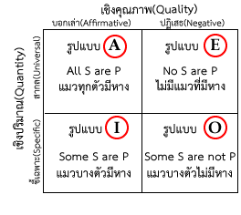
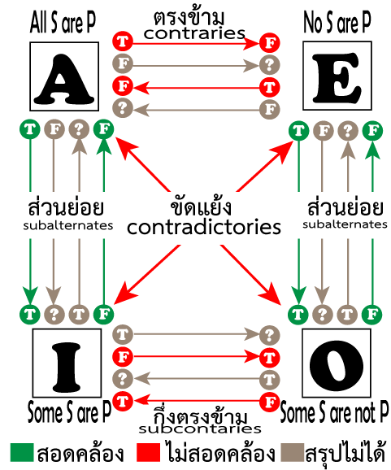

| ประโยคธรรมดา | ประโยคทางตรรกศาสตร์ |
|---|
| นกบินได้ | นกเป็นสัตว์ที่บินได้ |
| คนขยันทุกคนสอบได้ | คนขยันทุกคนเป็นคนสอบได้ |
| ครูบางคนใจดี | ครูบางคนเป็นคนใจดี |
| แมวบางตัวอ้วน | แมวบางตัวเป็นสัตว์อ้วน |
| พัดโบกเป็นเครื่องสูงชนิดหนึ่ง | พัดโบกทุกอัน เป็น เครื่องสูง |
| คนทุกคนถ้ายึดมั่นในความซื่อสัตย์แล้วจะประสบความสำเร็จในชีวิต | คนทุกคนที่ยึดมั่นในความซื่อสัตย์ เป็น คนที่ประสบความสำเร็จในชีวิต |
| คนที่ขยันอ่านหนังสือมีเพียงส่วนน้อยที่สอบตก | คนที่ขยันอ่านหนังสือบางคน เป็น คนที่สอบตก |
| คนที่นับถือศาสนาบางคนยึดมั่นในหลักธรรมะแล้วจะมีความสุข | คนนับถือศาสนาที่ยึดมั่นในหลักธรรมะบางคน เป็น คนที่มีความสุข |
| ใครก็ตามที่ทำดีจะได้รับคำชมเชย | ผู้ที่ทำดีทุกคน เป็น คนที่ได้รับคำชมเชย |

รูปแบบ A: สากล-บอกเล่า (Universal Affirmative)
S ทุกตัวเป็น P หรือ All S are P.
เป็นประโยคที่ประธานของประโยค (S) มีความหมายรวมถึง จำนวนที่มีอยู่ทั้งหมด (Universe) และเป็นประโยคบอกเล่า สังเกตได้คือ จะมีคำว่า "ทั้งหมด" "ทั้งมวล" "ทั้งสิ้น" "ทุกชนิด" "แต่ละอย่าง" "แต่ละชนิด" เป็นต้น อยู่ในประโยคด้วย
ตัวอย่างประโยค
| กล้วยทุกชนิด เป็นผลไม้ |
| แมวทุกตัว เป็นสัตว์เลี้ยงลูกด้วยนม |
| แมว เป็นสัตว์เลี้ยงลูกด้วยนม ชนิด Felis catus Linn. ในวงศ์ Felidae หัวกลมและสั้น มีเขี้ยว ๒ คู่ ขนยาวนุ่ม ตีนหน้ามี ๕ นิ้ว ตีนหลังมี ๔ นิ้ว ซ่อนเล็บได้ หางยาว สั้น หรือขอด มีหลายสี เช่น ดำ ขาว นํ้าตาล หรืออาจมีลายต่าง ๆ ส่วนใหญ่เลี้ยงไว้ตามบ้าน |
หมายเหตุ
- ประโยคที่ว่า All S are not P ไม่เป็นประโยคมาตรฐาน เพราะเป็นประโยคกำกวม อาจจะหมายถึง E หรือ O ก็ได้ ขึ้นอยู่กับสถานการณ์ เหตุการณ์แวดล้อม เช่น
กรณีประโยค E
ครูให้นักเรียนทายสีของกระต่าย ครูว่า "กระต่ายทุกตัวไม่มีสีขาว" ครูหมายถึง "ไม่มีกระต่ายตัวใดที่มีสีขาว" กรณีนี้ จะหมายถึง ประโยค E (No S are P)
กรณีประโยค O
ครูพานักเรียนอนุบาลไปสวนสัตว์ เห็นกระต่ายหลายตัว ทุกตัวมีสีขาว ครูพูดว่า "กระต่ายทุกตัวไม่มีสีขาว" ครูต้องการบอกนักเรียนว่า ที่เห็นกระต่ายสีขาวนี้ ไม่ใช่ว่ากระต่ายทุกตัวในโลก จะมีสีขาวเหมือนกันหมด แต่ "มีกระต่ายบางตัวที่ไม่มีสีขาว" กรณีนี้ จะหมายถึง ประโยค O (Some S are not P)
- ในภาษาไทย ส่วนใหญ่ เรามักจะใช้รูปแบบ All S are not P ในความหมายว่า No S are not P (ประโยค E) เช่น
ไม่มีกระต่ายตัวใดมีสีขาว → กระต่ายทุกตัวไม่มีสีขาว
ไม่มีคนไทยคนใดชอบการลักขโมย → คนไทยทุกคนไม่ชอบการลักขโมย
รูปแบบ E: สากล-ปฏิเสธ (Universal Negative)
ไม่มี S ตัวใดที่เป็น P หรือ No S are P.
| ไม่มีกล้วยชนิดใด เป็นผลไม้ |
| ไม่มีแมวตัวใด เป็นสัตว์เลี้ยงลูกด้วยนม |
| ไม่มีแมวตัวใด เป็นสัตว์เลือดเย็น |
| ไม่มีสารเคมีฆ่าแมลง ชนิดใด ที่นำไปสู่เกษตรกรรม ที่ยั่งยืน |
รูปแบบ I: ชี้เฉพาะ-บอกเล่า (Specific-Affirmative)
S บางตัวเป็น P หรือ Some S are P.
ตัวอย่างประโยค
| กล้วยบางชนิด เป็นผลไม้ |
| แมวบางตัว เป็นสัตว์เลี้ยงลูกด้วยนม |
| แมวบางตัว เป็นสัตว์มีขนสีขาว |
| เปลือกเมล็ดบางชนิด ของพืช เปลี่ยนสภาพไปหลายรูปแบบ เช่น เป็นใยสีขาว ทำให้เมล็ด ปลิวไปตามลมได้ |
รูปแบบ O: ชี้เฉพาะ-ปฎิเสธ (Specific-Negative)
S บางตัวไม่เป็น P หรือ Some S are not P.
ตัวอย่างประโยค
| กล้วยบางชนิด ไม่เป็นเป็นผลไม้ |
| แมวบางตัว ไม่เป็นสัตว์เลี้ยงลูกด้วยนม |
| แมวบางตัว ไม่เป็นสัตว์เลี้ยง |
| ปฏิกิริยารับอาหารบางชนิด ไม่ได้เกิดขึ้น ช้ากว่าปฏิกิริยาภูมิแพ้ และไม่เกี่ยวข้อง กับระบบ ภูมิคุ้มกันของร่างกาย ทั้งยังมักไม่เป็นอันตราย ถึงชีวิต |
ความสัมพันธ์ของรูปแบบทั้ง 4 รูปแบบ
ประโยคทั้ง 4 รูปแบบ มีความสัมพันธ์กัน ดังนี้

-
แบบขัดแย้งกัน (contradictories)
เป็นความสัมพันธ์ ระหว่าง A กับ O และ E กับ I
เป็นความสัมพันธ์ที่ไม่สอดคล้องกันระหว่างประโยค 2 ประโยค ที่มีประธาน(S) ตัวเดียวกัน และมีส่วนขยาย(P) ตัวเดียวกัน เช่น
ถ้า A เป็นจริง O ต้องเป็นเท็จ หรือ ถ้า O เป็นจริง A ต้องเป็นเท็จ
- ผู้พิพากษาทุกคนเป็นนักกฎหมาย (A)
- ผู้พิพากษาบางคนไม่เป็นนักกฎหมาย (O)
ถ้า E เป็นจริง I ต้องเป็นเท็จ หรือ ถ้า I เป็นจริง O ต้องเป็นเท็จ
- ไม่มีนักการเมืองคนใดเป็นนักอุดมคติ (E)
- นักการเมืองบางคนเป็นนักอุดมคติ (I)
-
แบบตรงข้าม (contraries)
เป็นความสัมพันธ์ ระหว่าง A กับ E
เป็นความสัมพันธ์ระหว่างประโยค 2 ประโยค ที่มีประธาน(S) ตัวเดียวกัน และมีส่วนขยาย(P) ตัวเดียวกัน โดยที่จะเป็นจริงพร้อม ๆ กันไม่ได้ แต่สามารถเป็นเท็จพร้อม ๆ กันทั้งสองประโยคได้ ดังนั้น ถ้าประโยคใดประโยคหนึ่งเป็นจริง อีกประโยคจะเป็นเท็จ (ไม่สอดคล้องกัน) แต่ถ้าประโยคใด ประโยคหนึ่งเป็นเท็จ เราสรุปไม่ได้ว่า อีกประโยคจะเป็นจริงหรือเท็จ เพราะอาจจะเป็นเท็จทั้งสองประโยค ก็ได้
กรณีเป็นจริง(ไม่สอดคล้อง)
ถ้า A เป็นจริง E เป็นเท็จ
ถ้า E เป็นจริง A เป็นเท็จ
-แมวของฉันทุกตัวชอบอาหารเม็ด(A)
-ไม่มีแมวของฉันตัวใดชอบอาหารเม็ด (E)
สมมุติว่า ฉันมีแมว 5 ตัว แมวทั้ง 5 ตัวชอบกินอาหารเม็ด จะทำให้ประโยค (A) เป็นจริง และ ประโยค (E) เป็นเท็จ
แต่ถ้าแมวทั้ง 5 ตัว ไม่ชอบอาหารเม็ด จะทำให้ประโยค (E) เป็นจริง และ ประโยค (A) เป็นเท็จ
กรณีเป็นเท็จ(สรุปไม่ได้)
ถ้า A เป็นเท็จ สรุปไม่ได้ว่า E เป็นจริงหรือเท็จ
ถ้า E เป็นเท็จ สรุปไม่ได้ว่า A เป็นจริงหรือเท็จ
-แมวของฉันทุกตัวชอบอาหารเม็ด(A)
-ไม่มีแมวของฉันตัวใดชอบอาหารเม็ด (E)
สมมุติว่า ฉันมีแมว 5 ตัว ประโยค A จะเป็นเท็จ ได้ เช่น (1)แมวทั้ง 5 ตัวของฉันไม่ชอบกินอาหารเม็ด หรือ (2) แมวของฉัน 3 ตัวชอบอาหารเม็ด แต่อีก 2 ตัวไม่ชอบอาหารเม็ด
ดังนั้น ถ้าเป็นกรณี (1) ประโยคที่ว่า "ไม่มีแมวของฉันตัวใดชอบอาหารเม็ด" ก็จะเป็นจริง
แต่ถ้าเป็นกรณี (2) ประโยคที่ว่า "ไม่มีแมวของฉันตัวใดชอบอาหารเม็ด" ก็จะเป็นเท็จ
ดังนั้น ในกรณีที่ประโยค A เป็นเท็จ จึงสรุปไม่ได้ว่า E จะเป็นจริงหรือเท็จ
ทำนองเดียวกัน ถ้า E เป็นเท็จ ก็สรุปเกี่ยวกับประโยค A ไม่ได้ เช่นกัน
สรุป
ถ้า A เป็นจริง E เป็นเท็จ ประโยคทั้งสอง ไม่สอดคล้องกัน
ถ้า A เป็นเท็จ E สรุปไม่ได้
ถ้า E เป็นจริง A เป็นเท็จ ประโยคทั้งสอง ไม่สอดคล้องกัน
ถ้า E เป็นเท็จ A สรุปไม่ได้
อย่างไรก็ตาม ในการทำข้อสอบ เราจะถือว่า ประโยคที่กำหนดให้ เป็นจริงตามที่กำหนด ดังนั้น เราจึงจะใช้กรณีเป็นจริง ในการวิเคราะห์ความสอดคล้อง นอกจากว่า โจทย์จะบอกชัดเจนว่า สิ่งที่กำหนดให้เป็นเท็จ เช่น ไม่เป็นความจริงที่แมวทุกตัวของฉันชอบอาหารเม็ด เป็นต้น
-
แบบกึ่งตรงข้าม (subcontraries)
เป็นความสัมพันธ์ของประโยค I กับประโยค O
เป็นความสัมพันธ์ระหว่างประโยค 2 ประโยค ที่มีประธาน(S) ตัวเดียวกัน และมีส่วนขยาย(P) ตัวเดียวกัน โดยที่จะเป็นเท็จพร้อม ๆ กันไม่ได้ แต่สามารถเป็นจริงพร้อม ๆ กันทั้งสองประโยคได้ ดังนั้น ถ้าประโยคใดประโยคหนึ่งเป็นเท็จ อีกประโยคจะเป็นจริง (ไม่สอดคล้องกัน) แต่ถ้าประโยคใดประโยคหนึ่งเป็นจริง เราสรุปไม่ได้ว่า อีกประโยคจะเป็นจริงหรือเท็จ เพราะอาจจะเป็นจริง ทั้งสองประโยค ก็ได้
กรณีเป็นจริง (สรุปไม่ได้)
ถ้า I เป็นจริง สรุปไม่ได้ว่า O เป็นจริงหรือเท็จ
ถ้า O เป็นจริง สรุปไม่ได้ว่า I เป็นจริงหรือเท็จ
-แมวของฉันบางตัวชอบกินปลาทู(I)
-แมวของฉันบางตัวไม่ชอบกินปลาทู(O)
ถ้าแมว 5 ตัวของฉัน มีแมว 3 ตัวชอบกินปลาทู อีก 2 ตัวไม่ชอบกินปลาทู จะทำให้ประโยคแรกเป็นจริง และประโยคที่ 2 ก็เป็นจริง
แต่ถ้าแมวทั้ง 5 ตัวของฉันชอบกินปลาทู จะทำให้ประโยคแรกเป็นจริงเพราะบางตัวคือตั้งแต่ 1 ตัวขึ้นไป แต่จะทำให้ประโยคที่ 2 เป็นเท็จ เพราะแมวทั้งหมดชอบกินปลาทู
ดังนั้น ถ้าประโยค I เป็นจริง ก็จะสรุปเกี่ยวกับประโยค O ไม่ได้
ทำนองเดียวกัน ถ้าประโยค O เป็นจริง ก็จะสรุปเกี่ยวกับประโยค I ไม่ได้ เช่นกัน
กรณีเป็นเท็จ (ไม่สอดคล้อง)
ถ้า I เป็นเท็จ O เป็นจริง
ถ้า O เป็นเท็จ I เป็นจริง
-แมวของฉันบางตัวชอบกินปลาทู(I)
-แมวของฉันบางตัวไม่ชอบกินปลาทู(O)
ถ้าแมวของฉันทั้ง 5 ตัว ไม่ชอบกินปลาทู ก็จะทำให้ประโยคแรก (I) เป็นเท็จ และประโยคหลัง(O) เป็นจริง ซึ่งจะทำให้ประโยคทั้งสอง ไม่สอดคล้องกัน
ทำนองเดียวกัน ถ้าประโยค O เป็นเท็จ ก็จะทำให้ประโยค I เป็นจริง
-
แบบส่วนย่อย (subalternates)
เป็นความสัมพันธ์ระหว่าง A → O และ E → I
กรณีที่เป็นจริง
ถ้า A เป็นจริง เราสรุปได้ว่า I เป็นจริง (สอดคล้อง) เช่น
-แมวทุกตัว เป็นสัตว์ที่มี 4 ขา(A)
-แมวบางตัว เป็นสัตว์ที่มี 4 ขา(I)
ประโยคหลัง (I) เป็นจริง เพราะ แมวบางตัว หมายถึง แมวตั้งแต่ 1 ตัว ขึ้นไป
ถ้า E เป็นจริง เราสรุปได้ว่า O เป็นจริง (สอดคล้อง) เช่น
-ไม่มีแมวตัวใด ชอบอาบน้ำ(E)
-แมวบางตัว ไม่ชอบอาบน้ำ(O)
ประโยคหลัง (O) เป็นจริง เพราะ แมวบางตัว หมายถึง แมวตั้งแต่ 1 ตัว ขึ้นไป
ถ้า I เป็นจริง เราสรุปไม่ได้ว่า A เป็นจริงหรือไม่ เช่น
-แมวบางตัวของฉัน มีสีขาวปลอด(I)
-แมวทุกตัวของฉัน มีสีขาวปลอด(A)
ถ้าแมวของฉัน 2 ตัวมีสีขาวปลอด อีก 3 ตัวที่เหลือมีสี ขาว-ดำ จะทำให้ประโยคแรก (I) เป็นจริง แต่ ประโยคหลัง (A) เป็นเท็จ เพราะมีแมวบางตัวที่ไม่มีสีขาวปลอด
แต่ถ้าแมวทั้ง 5 ตัวของฉัน มีสีขาวปลอดทั้งหมด ก็จะทำให้ ประโยคแรก (I) เป็นจริง เพราะ แมวบางตัว หมายถึง แมวตั้งแต่ 1 ตัวขึ้นไป และ จะทำให้ประโยคหลัง (A) เป็นจริง
ดังนั้น ถ้า I เป็นจริง เราสรุปไม่ได้ว่า A เป็นจริงหรือไม่
ทำนองเดียวกัน ถ้า O เป็นจริง เราสรุปไม่ได้ว่า E จะเป็นจริงหรือไม่
กรณีที่เป็นเท็จ
ถ้า I เป็นเท็จ เราสรุปได้ว่า A เป็นเท็จด้วย(สอดคล้อง) เช่น
- แมวบางตัวของฉันชอบกินอาหารเม็ด (I)
- แมวทุกตัวของฉันชอบกินอาหารเม็ด (A)
ถ้าแมวของฉันทั้ง 5 ตัว ไม่ชอบอาหารเม็ดเลย จะทำให้ประโยคแรก (I) เป็นเท็จ และประโยคหลัง (A) เป็นเท็จด้วย
ทำนองเดียวกัน ถ้า O เป็นเท็จ เราสรุปได้ว่า E เป็นเท็จด้วย
ถ้า A เป็นเท็จ เราสรุปไม่ได้ว่า I เป็นจริงหรือเท็จ เช่น
- แมวทุกตัวของฉันชอบกินปลาทู (A)
- แมวบางตัวของฉันชอบกินปลาทู (I)
ถ้าแมวทั้ง 5 ตัวของฉัน ไม่ชอบกินปลาทู ประโยคแรก (A) ก็จะเป็นเท็จ และประโยคหลัง (I) ก็เป็นเท็จเหมือนกัน
แต่ถ้าแมวของฉัน 3 ตัว ไม่ชอบกินปลาทู แต่อีก 2 ตัวชอบกินปลาทู จะทำให้ประโยคแรก (A) เป็นเท็จ แต่จะทำให้ ประโยคหลัง (I) เป็นจริง เพราะบางตัว หมายถึง ตั้งแต่ 1 ตัวขึ้นไป
ดังนั้น ถ้า A เป็นเท็จ เราสรุปไม่ได้ว่า I เป็นจริงหรือเท็จ
ทำนองเดียวกัน ถ้า E เป็นเท็จ เราสรุปไม่ได้ว่า O เป็นจริงหรือเท็จ
สรุป
ถ้า A เป็นจริง I เป็นจริง ประโยคทั้งสอง สอดคล้องกัน
ถ้า A เป็นเท็จ สรุปเกี่ยวกับ I ไม่ได้
ถ้า E เป็นจริง O เป็นจริง ประโยคทั้งสอง สอดคล้องกัน
ถ้า E เป็นเท็จ สรุปเกี่ยวกับ O ไม่ได้
การเปลี่ยนประโยค
ประโยคมาตรฐานทั้ง 4 แบบข้างต้น คือ A, E, I และ O ก็สามารถนำมาเปลี่ยนแปลงได้ ด้วยวิธีการต่าง ๆ ซึ่ง บางอย่างยังคงความหมายเดิม หรือ สอดคล้องกับความหมายเดิม แต่บางอย่างก็ ไม่สอดคล้องกับประโยคเดิม
วิธีการเปลี่ยนแปลงประโยค 3 วิธี ได้แก่ Conversion, Obvertion และ Contraposition
- Conversion (การสลับที่)
Conversion มี 2 แบบ คือ Simple Conversion(อย่างง่าย) และ Partial Conversion หรือ by limitation (การสลับที่บางส่วน)
-
Simple Conversion (การสลับที่อย่างง่าย)
เป็นการสลับตำแหน่งของประธาน (S) และส่วนขยาย(P) โดยที่ส่วนอื่น ๆ ไม่มีการเปลี่ยนแปลง
วิธีการนี้ ใช้กับประโยค E (No S are P)และ I (Some S are P) จะได้ประโยคใหม่ ที่มีความหมาย สอดคล้อง กับประโยคเดิม
ตัวอย่างประโยค
| รูปแบบ | ประโยคเดิม | ประโยคใหม่ | ความสอดคล้อง |
|---|
| A | All S are P
แมวทุกตัว เป็นสัตว์เลี้ยงลูกด้วยนม | All P are S
สัตว์เลี้ยงลูกด้วยนมทุกตัว เป็นแมว | ไม่สอดคล้อง |
| E | No S are P
ไม่มีแมวตัวใด เป็นนก | No P are S
ไม่มีนกตัวใด เป็นแมว | สอดคล้อง |
| I | Some S are P
ครูบางคน ใจดี | Some P are S
คนใจดีบางคน เป็นครู | สอดคล้อง |
| O | Some S are not P
คนขยันบางคน ไม่ใช่ คนสอบได้ | Some P are not S
คนสอบได้บางคน ไม่ใช่ คนขยัน | ไม่สอดคล้อง |
-
Partial Conversion(การสลับที่บางส่วน)
การสลับที่บางส่วน ทำได้เฉพาะประโยครูปแบบ A เท่านั้น เป็นการสลับที่ระหว่าง ประธานและส่วนขยาย และมีการเปลี่ยน Quantity จาก สากล(Universal) เป็นชี้เฉพาะ(Particular) คือ เปลี่ยนคำแสดงจำนวน จากทั้งหมด → บางส่วน (ส่วนน้อย ส่วนใหญ่ ส่วนมาก เกือบทั้งหมด ฯลฯ) หรือ เป็นการเปลี่ยนประโยคจาก A → I นั่นเอง เพียงแต่ต้องมีการสลับที่ด้วย ประโยคใหม่ ที่ได้ จะมีความสอดคล้อง กับประโยคเดิม เช่น
| รูปประโยค | ประโยคเดิม | ประโยคใหม่ | ความสอดคล้อง |
|---|
| A → I | ผู้พิพากษา ทุกคน เป็นนักกฎหมาย | นักกฎหมาย บางคน เป็นผู้พิพากษา | สอดคล้อง |
| A → I | นักเรียน ทุกคน ง่วงนอน | ผู้ที่ง่วงนอน บางคน เป็นนักเรียน | สอดคล้อง |
| A → I | คนขยันทุกคน สอบได้ | ผู้ที่สอบได้บางคน เป็นคนขยัน | สอดคล้อง |
- ประโยคเงื่อนไข(Conditional Statement)
ประโยคเงื่อนไข เมื่อนำมาสลับที่กัน เช่น if P then Q เป็น if Q then P ประโยคใหม่ จะไม่สอดคล้อง กับประโยคเดิม
| รูปประโยค | ประโยคเดิม | ประโยคใหม่ | ความสอดคล้อง |
|---|
| เงื่อนไข | P → Q
ถ้าฝนไม่ตก ฉันจะไปตลาด | Q → P
ถ้าฉันไปตลาด ฝนจะตก | ไม่สอดคล้อง |
- Obversion (เปลี่ยนคุณภาพและส่วนขยาย)
เป็นการเปลี่ยน 2 อย่าง คือ
- เปลี่ยนคุณภาพ (Quality) เป็นตรงข้าม
จากประโยค A → ประโยค E
จากประโยค E → ประโยค A
จากประโยค I → ประโยค O
จากประโยค O → ประโยค I
- เปลี่ยนส่วนขยาย เป็นตรงข้าม เช่น
นก → สัตว์ที่ไม่ใช่นก
ขยัน → ไม่ขยัน, เกียจคร้าน
การเปลี่ยนประโยคแบบ Obversion จะได้ประโยคใหม่ ที่สอดคล้องกับประโยคเดิม ในทุกกรณี
ตัวอย่างการเปลี่ยนประโยค
| ประโยค (A) | เยาวชนอายุครบ 18 ปี ทุกคน เป็น ผู้มีสิทธิ ออกเสียงเลือกตั้ง |
| 1. | เปลี่ยนคุณภาพ(Quality)
A → E
All S are P → No S are P | ไม่มี เยาวชนอายุครบ18ปีคนใด เป็น ผู้มีสิทธิ ออกเสียงเลือกตั้ง |
| 2. | เปลี่ยนส่วนขยาย เป็นตรงข้าม | ไม่มี เยาวชนอายุครบ18ปีคนใด เป็นผู้ไม่มีสิทธิออกเสียงเลือกตั้ง |
ตัวอย่างประโยค
| รูปประโยค | ประโยคเดิม | ประโยคใหม่ | ความสอดคล้อง |
|---|
| A | All S are P
แมวทุกตัว เป็น สัตว์เลี้ยงลูกด้วยนม | No S are non-P
ไม่มีแมวตัวใด เป็น สัตว์ไม่เลี้ยงลูกด้วยนม | สอดคล้อง |
| E | No S are P
ไม่มี แมวตัวใด เป็นนก | All S are non-P
แมวทุกตัว เป็น สัตว์ที่ไม่ใช่นก หรือ
แมวทุกตัวไม่ใช่นก | สอดคล้อง |
| I | Some S are P
ครูบางคน เป็น คนใจดี | Some S are not non-P
ครูบางคน ไม่เป็น คนไม่ใจดี
ครูบางคน ไม่เป็น คนใจร้าย | สอดคล้อง |
| O | Some S are not P
สุนัขบางตัว ไม่เป็น สัตว์อ้วน
สุนัขบางตัว ไม่อ้วน | Some S are non-P
สุนัขบางตัว เป็น สัตว์ที่ไม่อ้วน
สุนัขบางตัว ไม่อ้วน
สุนัขบางตัว ผอม | สอดคล้อง |
- Contraposition (สลับที่แล้วเปลี่ยนเป็นตรงข้าม)
-
Full Contraposition เป็นการสลับตำแหน่ง ระหว่าง ประธานและส่วนขยาย จากนั้นเปลี่ยน ประธานและส่วนขยาย ให้เป็นตรงข้าม
วิธีการนี้ ใช้กับประโยค A (All S are P)และ O (Some S are not P) จะได้ประโยคใหม่ ที่มีความหมาย สอดคล้อง กับประโยคเดิม
ตัวอย่าง
| รูปแบบ | ประโยคเดิม | ประโยคใหม่ | ความสอดคล้อง |
|---|
| A | All S are P
สัตว์บินได้ทุกตัว เป็น สัตว์มีปีก | All non-P are non-S
สัตว์ไม่มีปีกทุกตัว เป็น สัตว์ที่บินไม่ได้ | สอดคล้อง |
| O | Some S are not P
คนขยันบางคน ไม่ใช่ เศรษฐี | Some non-P are not non-S
คนที่ไม่ใช่เศรษฐีบางคน ไม่ใช่ ไม่ใช่คนขยัน
คนที่ไม่ใช่เศรษฐีบางคน ไม่ใช่ คนเกียจคร้าน
คนจนบางคน ไม่ใช่ คนเกียจคร้าน | สอดคล้อง |
-
Partial Contraposition
Partial Contraposition ทำได้เฉพาะประโยครูปแบบ E (No S are P)เท่านั้น
วิธีการ มี 2 ขั้นตอน คือ
1. ทำ Contraposition คือ สลับตำแหน่งระหว่าง ประธานและส่วนขยาย จากนั้นเปลี่ยน ประธานและส่วนขยาย ให้เป็นตรงข้าม เช่น
ไม่มีชาวนาคนไหน ตื่นสาย → ไม่มีคนที่ไม่ตื่นสาย เป็น คนที่มีอาชีพอื่นที่ไม่ใช่ชาวนา
2. ปรับเป็น subalternate คือเปลี่ยนจาก No S are P เป็น Some S are not P
ไม่มีคนที่ไม่ตื่นสาย เป็น คนมีอาชีพอื่นที่ไม่ใช่ชาวนา → คนที่ไม่ตื่นสายบางคน ไม่เป็น คนที่มีอาชีพอื่น ที่ไม่ใช่ชาวนา ซึ่งถ้าตัดปฏิเสธซ้อนปฏิเสธ ก็จะได้ว่า คนตื่นสายบางคน ไม่ใช่ชาวนา
ตัวอย่าง
| รูปแบบ | ประโยคเดิม | ประโยคใหม่ | ความสอดคล้อง |
|---|
| E | No S are P
ไม่มีชาวนา ตื่นสาย | Some non-P are not non-S
คนตื่นไม่สายบางคน ไม่เป็น ไม่ใช่ชาวนา
คนตื่นสายบางคน ไม่ใช่ ชาวนา | สอดคล้อง |
| E | No S are P
ไม่มีชาวนา ตื่นสาย | Some non-P are not non-S
คนตื่นไม่สายบางคน ไม่เป็น ไม่ใช่ชาวนา
คนตื่นเช้าบางคน เป็น ชาวนา | สอดคล้อง |
สรุป Conversion, Obversion และ Contraposition
| ประโยคเดิม | ประโยคใหม่ |
|---|
| Conversion |
| A: All S is P | Some P is S
(Partial Conversion) |
| E: No S is P | No P is S |
| I : Some S is P | Some P is S |
| O: Some S is not P | ไม่มี |
| Obversion |
| A: All S is P | No S is non-P |
| E: No S is P | All S is non-P |
| I : Some S is P | Some S is not non-P |
| O: Some S is not P | Some S is non-P |
| Contraposition |
| A: All S is P | All non-P is non-S |
| E: No S is P | Some non-P is not non-S.
(Partial contraposition) |
| I : Some S is P | ไม่มี |
| O: Some S is not P | Some non-P is not non-S |
- ประโยคเงื่อนไข (Conditional Statement)
ประโยคเงื่อนไข เมื่อนำมาใช้กับ Contraposition เช่น if P then Q เป็น if ~Q then ~P ประโยคใหม่ จะสอดคล้อง กับประโยคเดิม
| รูปประโยค | ประโยคเดิม | ประโยคใหม่ | ความสอดคล้อง |
|---|
| เงื่อนไข | P → Q
ถ้าฝนไม่ตก ฉันจะไปตลาด | ~Q → ~P
ฉันไม่ไปตลาด ฝนไม่ตก | สอดคล้อง |
DeMorgan's Laws:
ตามกฎของ DeMorgan's Laws เราสรุปได้ว่า
1. NOT (p AND q) == (NOT p) OR (NOT q)
2. NOT (p OR q) == (NOT p) AND (NOT q)
การนำ กฎของ DeMorgan's Laws ไปใช้วิเคราะห์ความสอดคล้อง
บางครั้ง มีการกำหนดประโยคที่เป็นประโยคความรวม และให้หา ประโยคตรงข้ามหรือ ไม่ความสอดคล้อง เช่น
คนไทยบางคนดีและสุภาพ
เราต้องกระจายประโยคออกเป็น 2 ประโยค คือ "คนไทยบางคนเป็นคนดี และ คนไทยบางคนเป็นคนสุภาพ" ซึ่งเป็นประโยค I ทั้งสองประโยค
จาก จตุรัสแห่งความขัดแย้ง เราทราบว่า ประโยค I จะขัดแย้งกับประโยค E อย่างแน่นอน
ดังนั้น เราจะได้ว่า "คนไทยทุกคนไม่เป็นคนดี และ คนไทยทุกคนไม่เป็นคนสุภาพ"
กฎของ DeMorgan's Laws ข้อ 1 ทำให้เราสรุปได้ว่า
คนไทยทุกคนไม่เป็นคนดี
หรือ ไม่เป็นคนสุภาพ
คำว่า "แต่" ไม่เป็นคำเชื่อมในทางตรรกศาตร์ (Logical connector) ถ้าพบในโจทย์ ให้เปลี่ยนเป็นคำว่า และ เช่น
นกกระจอกเทศมีปีกแต่บินไม่ได้ → นกกระจอกเทศเป็นสัตว์มีปีก และ นกกระจอกเทศเป็นสัตว์บินไม่ได้
อ้างอิง
http://www.uky.edu/ ~rosdatte/phi120/ lesson11a.htm
http://rintintin.colorado.edu/ ~vancecd/phil1440/ notes.html
Logic for Dummies ของ Mark Zegarel
Introduction to Logic ของ Irving M. Copi และคณะ
https://www.slideshare.net/ nicklykins/44-conversion -obversion-and -contraposition